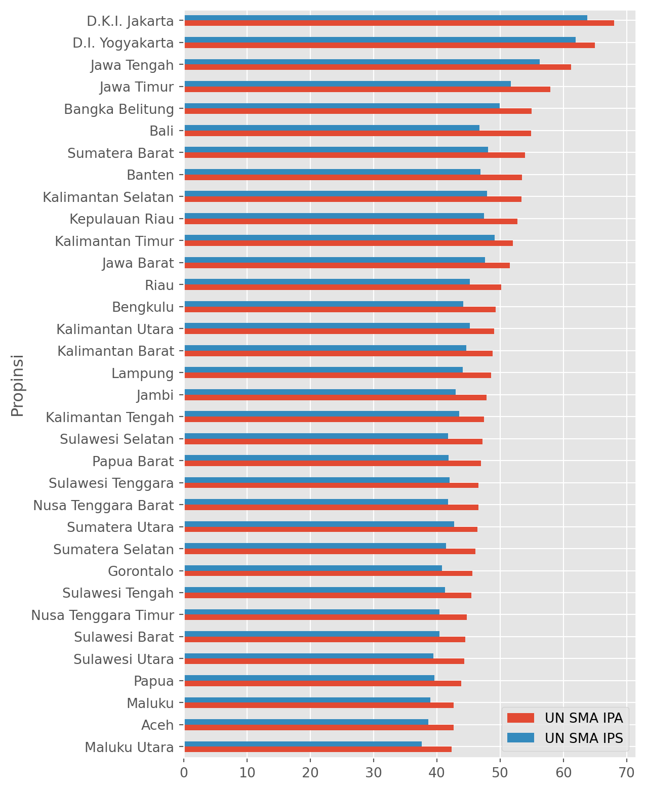
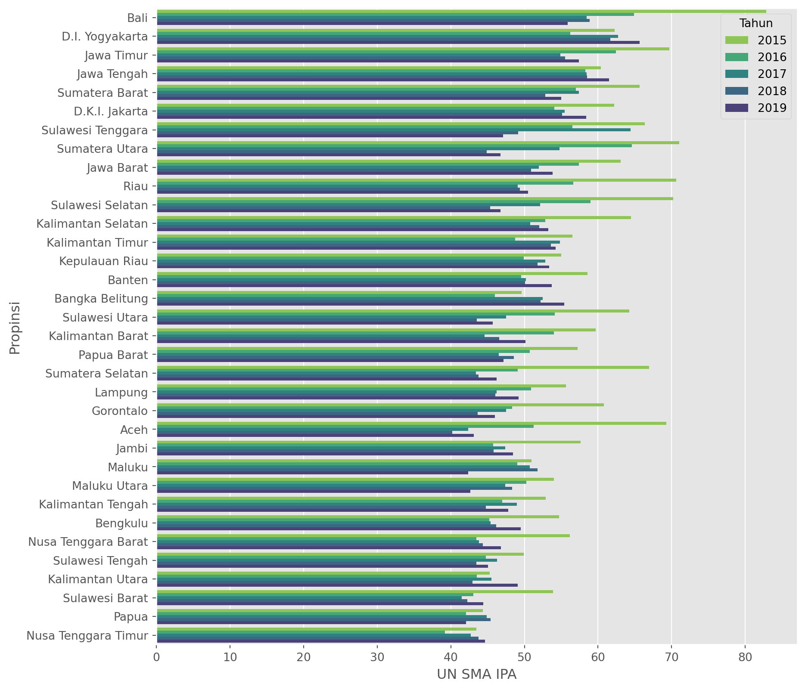
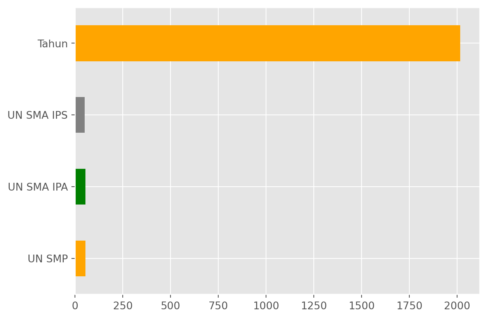
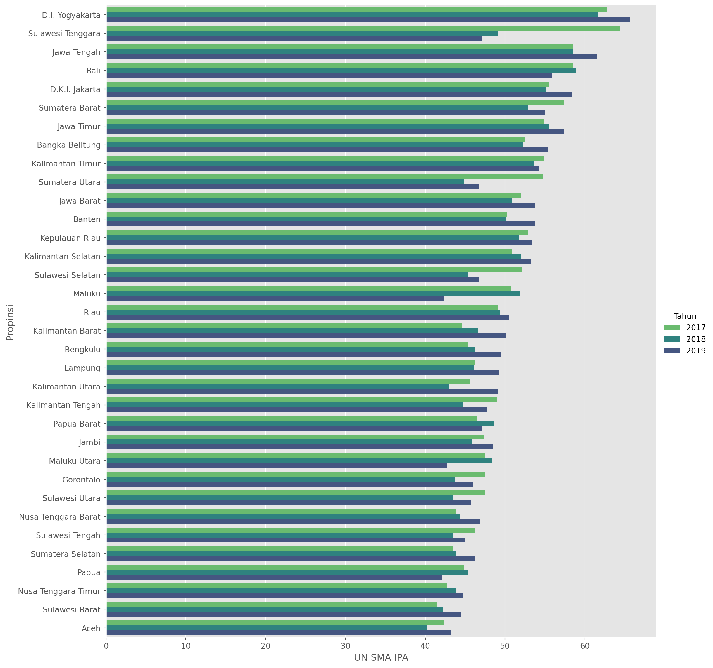

The Role of National Exam
For the longest time, national exam, like many other countries in the world is used as one of the metric to measure how well our future would be (re: childrens). The concept is simple, each and every children in the country will be given a set of questions/ tasks, that has to be completed for a given time, on different subjects (likely to be Math, Language, Science).
In Indonesia, this was used to be the sole metric to say if one student passed the exam or not. This has been changed ever since the newly appointed education minister of Indonesia, Nadiem Makarim (also the co-founder of SE Asia Decacorn- Gojek, Now GoTo).
Apakah kualitas pendidikan Indonesia tingkat SMP-SMA masih terpusat hanya di Jawa dan Sekitarnya?
Show Code
| No. | Kode Wilayah | Nama Wilayah | Propinsi | Persentase Anggaran Pendidikan tanpa Transfer Daerah (%) | UN SMP | UN SMA IPA | UN SMA IPS | UN SMA BAHASA | UN SMK | IIUN SMP | IIUN SMA IPA | IIUN SMA IPS | IIUN SMA BAHASA | IIUN SMK | |
|---|---|---|---|---|---|---|---|---|---|---|---|---|---|---|---|
| 0 | 1 | 010000 | Prov. D.K.I. Jakarta | Prov. D.K.I. Jakarta | 18.96 | 62.17 | 67.99 | 63.75 | 0 | 51.41 | 100 | 100 | 100 | 0 | 100 |
| 1 | 2 | 010100 | Kab. Kepulauan Seribu | Prov. D.K.I. Jakarta | 0.00 | 45.26 | 0 | 0 | 0 | 0 | 100 | 0 | 0 | 0 | 0 |
| 2 | 3 | 016000 | Kota Jakarta Pusat | Prov. D.K.I. Jakarta | 0.00 | 60.97 | 69.43 | 64.01 | 0 | 55.13 | 100 | 100 | 100 | 0 | 100 |
| 3 | 4 | 016100 | Kota Jakarta Utara | Prov. D.K.I. Jakarta | 0.00 | 60.09 | 66.59 | 61.53 | 0 | 48.85 | 100 | 100 | 100 | 0 | 100 |
| 4 | 5 | 016200 | Kota Jakarta Barat | Prov. D.K.I. Jakarta | 0.00 | 60.42 | 69.31 | 63.85 | 0 | 49.65 | 100 | 100 | 100 | 0 | 100 |
| ... | ... | ... | ... | ... | ... | ... | ... | ... | ... | ... | ... | ... | ... | ... | ... |
| 542 | 543 | 340000 | Prov. Kalimantan Utara | Prov. Kalimantan Utara | 6.21 | 50.22 | 50.67 | 45.67 | 0 | 45.4 | 90.71 | 100 | 100 | 0 | 100 |
| 543 | 544 | 340100 | Kab. Malinau | Prov. Kalimantan Utara | 11.92 | 49.51 | 46.42 | 42.44 | 0 | 38.85 | 82.58 | 100 | 100 | 0 | 100 |
| 544 | 545 | 340200 | Kab. Bulungan | Prov. Kalimantan Utara | 12.84 | 48.58 | 50.91 | 46.21 | 0 | 45.13 | 90.49 | 100 | 100 | 0 | 100 |
| 545 | 546 | 340300 | Kab. Tana Tidung | Prov. Kalimantan Utara | 12.84 | 47.11 | 49.01 | 45.17 | 0 | 0 | 100 | 100 | 100 | 0 | 0 |
| 546 | 547 | 340500 | Kab. Nunukan | Prov. Kalimantan Utara | 11.87 | 47.99 | 48.4 | 43.39 | 0 | 45.42 | 90.09 | 100 | 100 | 0 | 100 |
547 rows × 15 columns
Index(['No.', 'Kode Wilayah', 'Nama Wilayah', 'Propinsi',
'Persentase Anggaran Pendidikan tanpa Transfer Daerah (%)', 'UN SMP',
'UN SMA IPA', 'UN SMA IPS', 'UN SMA BAHASA', 'UN SMK', 'IIUN SMP',
'IIUN SMA IPA', 'IIUN SMA IPS', 'IIUN SMA BAHASA', 'IIUN SMK'],
dtype='object')Show Code
| Nama Wilayah | Propinsi | UN SMP | UN SMA IPA | UN SMA IPS | |
|---|---|---|---|---|---|
| 0 | Prov. D.K.I. Jakarta | Prov. D.K.I. Jakarta | 62.17 | 67.99 | 63.75 |
| 1 | Kab. Kepulauan Seribu | Prov. D.K.I. Jakarta | 45.26 | 0 | 0 |
| 2 | Kota Jakarta Pusat | Prov. D.K.I. Jakarta | 60.97 | 69.43 | 64.01 |
| 3 | Kota Jakarta Utara | Prov. D.K.I. Jakarta | 60.09 | 66.59 | 61.53 |
| 4 | Kota Jakarta Barat | Prov. D.K.I. Jakarta | 60.42 | 69.31 | 63.85 |
| ... | ... | ... | ... | ... | ... |
| 542 | Prov. Kalimantan Utara | Prov. Kalimantan Utara | 50.22 | 50.67 | 45.67 |
| 543 | Kab. Malinau | Prov. Kalimantan Utara | 49.51 | 46.42 | 42.44 |
| 544 | Kab. Bulungan | Prov. Kalimantan Utara | 48.58 | 50.91 | 46.21 |
| 545 | Kab. Tana Tidung | Prov. Kalimantan Utara | 47.11 | 49.01 | 45.17 |
| 546 | Kab. Nunukan | Prov. Kalimantan Utara | 47.99 | 48.4 | 43.39 |
547 rows × 5 columns
<class 'pandas.core.frame.DataFrame'>
RangeIndex: 547 entries, 0 to 546
Data columns (total 5 columns):
# Column Non-Null Count Dtype
--- ------ -------------- -----
0 Nama Wilayah 547 non-null object
1 Propinsi 547 non-null object
2 UN SMP 547 non-null object
3 UN SMA IPA 547 non-null object
4 UN SMA IPS 547 non-null object
dtypes: object(5)
memory usage: 21.5+ KBShow Code
| Nama Wilayah | Propinsi | UN SMP | UN SMA IPA | UN SMA IPS | |
|---|---|---|---|---|---|
| 0 | Prov. D.K.I. Jakarta | Prov. D.K.I. Jakarta | 62.17 | 67.99 | 63.75 |
| 1 | Kab. Kepulauan Seribu | Prov. D.K.I. Jakarta | 45.26 | 0.00 | 0.00 |
| 2 | Kota Jakarta Pusat | Prov. D.K.I. Jakarta | 60.97 | 69.43 | 64.01 |
| 3 | Kota Jakarta Utara | Prov. D.K.I. Jakarta | 60.09 | 66.59 | 61.53 |
| 4 | Kota Jakarta Barat | Prov. D.K.I. Jakarta | 60.42 | 69.31 | 63.85 |
| ... | ... | ... | ... | ... | ... |
| 542 | Prov. Kalimantan Utara | Prov. Kalimantan Utara | 50.22 | 50.67 | 45.67 |
| 543 | Kab. Malinau | Prov. Kalimantan Utara | 49.51 | 46.42 | 42.44 |
| 544 | Kab. Bulungan | Prov. Kalimantan Utara | 48.58 | 50.91 | 46.21 |
| 545 | Kab. Tana Tidung | Prov. Kalimantan Utara | 47.11 | 49.01 | 45.17 |
| 546 | Kab. Nunukan | Prov. Kalimantan Utara | 47.99 | 48.40 | 43.39 |
547 rows × 5 columns
| Wilayah | Propinsi | UN SMP | UN SMA IPA | UN SMA IPS | |
|---|---|---|---|---|---|
| 0 | Prov. D.K.I. Jakarta | Prov. D.K.I. Jakarta | 62.17 | 67.99 | 63.75 |
| 1 | Kab. Kepulauan Seribu | Prov. D.K.I. Jakarta | 45.26 | 0.00 | 0.00 |
| 2 | Kota Jakarta Pusat | Prov. D.K.I. Jakarta | 60.97 | 69.43 | 64.01 |
| 3 | Kota Jakarta Utara | Prov. D.K.I. Jakarta | 60.09 | 66.59 | 61.53 |
| 4 | Kota Jakarta Barat | Prov. D.K.I. Jakarta | 60.42 | 69.31 | 63.85 |
| ... | ... | ... | ... | ... | ... |
| 542 | Prov. Kalimantan Utara | Prov. Kalimantan Utara | 50.22 | 50.67 | 45.67 |
| 543 | Kab. Malinau | Prov. Kalimantan Utara | 49.51 | 46.42 | 42.44 |
| 544 | Kab. Bulungan | Prov. Kalimantan Utara | 48.58 | 50.91 | 46.21 |
| 545 | Kab. Tana Tidung | Prov. Kalimantan Utara | 47.11 | 49.01 | 45.17 |
| 546 | Kab. Nunukan | Prov. Kalimantan Utara | 47.99 | 48.40 | 43.39 |
547 rows × 5 columns
Wilayah 547
Propinsi 34
UN SMP 478
UN SMA IPA 486
UN SMA IPS 478
dtype: int64| Wilayah | Propinsi | UN SMP | UN SMA IPA | UN SMA IPS | |
|---|---|---|---|---|---|
| 0 | Prov. D.K.I. Jakarta | D.K.I. Jakarta | 62.17 | 67.99 | 63.75 |
| 1 | Kab. Kepulauan Seribu | D.K.I. Jakarta | 45.26 | 0.00 | 0.00 |
| 2 | Kota Jakarta Pusat | D.K.I. Jakarta | 60.97 | 69.43 | 64.01 |
| 3 | Kota Jakarta Utara | D.K.I. Jakarta | 60.09 | 66.59 | 61.53 |
| 4 | Kota Jakarta Barat | D.K.I. Jakarta | 60.42 | 69.31 | 63.85 |
| ... | ... | ... | ... | ... | ... |
| 542 | Prov. Kalimantan Utara | Kalimantan Utara | 50.22 | 50.67 | 45.67 |
| 543 | Kab. Malinau | Kalimantan Utara | 49.51 | 46.42 | 42.44 |
| 544 | Kab. Bulungan | Kalimantan Utara | 48.58 | 50.91 | 46.21 |
| 545 | Kab. Tana Tidung | Kalimantan Utara | 47.11 | 49.01 | 45.17 |
| 546 | Kab. Nunukan | Kalimantan Utara | 47.99 | 48.40 | 43.39 |
547 rows × 5 columns
Show Code

Buat Fungsi untuk Webscraping per tahun-nya
Show Code
def webscrap(tahun):
df = pd.read_html(f'https://npd.kemdikbud.go.id/?appid=hasilun&tahun={tahun}')[1][0:547] #ambil data dari web
df = df[['Nama Wilayah', 'Propinsi', 'UN SMP','UN SMA IPA', 'UN SMA IPS']] #extract kolom
df = df.astype({'UN SMP': float, 'UN SMA IPA': float, 'UN SMA IPS': float}) #ubah dtypes
df = df.rename(columns={'Nama Wilayah': 'Wilayah'}) #rename kolom 'Nama Wilayah' jadi 'Wilayah'
df['Propinsi'] = df['Propinsi'].str.replace('Prov. ', '', regex=False) #menghapus 'Prov.'
df['Tahun'] = tahun #menambahkan kolom tahun
return df| Wilayah | Propinsi | UN SMP | UN SMA IPA | UN SMA IPS | Tahun | |
|---|---|---|---|---|---|---|
| 0 | Prov. D.K.I. Jakarta | D.K.I. Jakarta | 73.96 | 72.99 | 66.05 | 2015 |
| 1 | Kab. Kepulauan Seribu | D.K.I. Jakarta | 62.80 | 0.00 | 0.00 | 2015 |
| 2 | Kota Jakarta Pusat | D.K.I. Jakarta | 74.02 | 72.82 | 63.99 | 2015 |
| 3 | Kota Jakarta Utara | D.K.I. Jakarta | 71.22 | 69.54 | 63.31 | 2015 |
| 4 | Kota Jakarta Barat | D.K.I. Jakarta | 71.86 | 71.79 | 63.71 | 2015 |
| Wilayah | Propinsi | UN SMP | UN SMA IPA | UN SMA IPS | Tahun | |
|---|---|---|---|---|---|---|
| 0 | Prov. D.K.I. Jakarta | D.K.I. Jakarta | 62.17 | 67.99 | 63.75 | 2019 |
| 1 | Kab. Kepulauan Seribu | D.K.I. Jakarta | 45.26 | 0.00 | 0.00 | 2019 |
| 2 | Kota Jakarta Pusat | D.K.I. Jakarta | 60.97 | 69.43 | 64.01 | 2019 |
| 3 | Kota Jakarta Utara | D.K.I. Jakarta | 60.09 | 66.59 | 61.53 | 2019 |
| 4 | Kota Jakarta Barat | D.K.I. Jakarta | 60.42 | 69.31 | 63.85 | 2019 |
Show Code
<class 'pandas.core.frame.DataFrame'>
Int64Index: 2735 entries, 0 to 546
Data columns (total 6 columns):
# Column Non-Null Count Dtype
--- ------ -------------- -----
0 Wilayah 2735 non-null object
1 Propinsi 2735 non-null object
2 UN SMP 2735 non-null float64
3 UN SMA IPA 2735 non-null float64
4 UN SMA IPS 2735 non-null float64
5 Tahun 2735 non-null int64
dtypes: float64(3), int64(1), object(2)
memory usage: 149.6+ KBWilayah 547
Propinsi 34
UN SMP 1822
UN SMA IPA 1903
UN SMA IPS 1840
Tahun 5
dtype: int64Index(['Wilayah', 'Propinsi', 'UN SMP', 'UN SMA IPA', 'UN SMA IPS', 'Tahun'], dtype='object')Show Code
| Propinsi | UN SMA IPA | |
|---|---|---|
| 0 | Bali | 64.194400 |
| 1 | D.I. Yogyakarta | 61.704333 |
| 2 | Jawa Timur | 59.966154 |
| 3 | Jawa Tengah | 59.417556 |
| 4 | Sumatera Barat | 57.568800 |
| 5 | D.K.I. Jakarta | 57.060286 |
| 6 | Sulawesi Tenggara | 56.707556 |
| 7 | Sumatera Utara | 56.408235 |
| 8 | Jawa Barat | 55.441714 |
| 9 | Riau | 55.242308 |
Show Code
fig, axs = plt.subplots(figsize=(10,10))
order_propinsi = \
(un_2015_2019
.query(" Tahun==2019 ")
.groupby('Propinsi')
.mean()
.sort_values(by='UN SMA IPA', ascending=False)
.reset_index()
)
(sns
.barplot(
data=un_2015_2019.query(" Tahun>2014 "),
x='UN SMA IPA',
y='Propinsi',
hue='Tahun',
ax=axs,
errorbar=('ci', False),
palette='viridis_r',
order=order_new['Propinsi']
)
);/var/folders/k3/rq3y45b92kbf6vtf128q_99r0000gn/T/ipykernel_27081/4257083329.py:4: FutureWarning:
The default value of numeric_only in DataFrameGroupBy.mean is deprecated. In a future version, numeric_only will default to False. Either specify numeric_only or select only columns which should be valid for the function.

Show Code
| Wilayah | Propinsi | UN SMP | UN SMA IPA | UN SMA IPS | Tahun | |
|---|---|---|---|---|---|---|
| 0 | Kab. Kutai Barat | Kalimantan Timur | 67.48 | 67.03 | 66.30 | 2015 |
| 1 | Kota Bontang | Kalimantan Timur | 61.46 | 66.26 | 58.32 | 2019 |
| 2 | Kota Bontang | Kalimantan Timur | 57.47 | 63.93 | 61.97 | 2017 |
| 3 | Kota Bontang | Kalimantan Timur | 58.06 | 63.40 | 58.75 | 2018 |
| 4 | Kab. Kutai Kartanegara | Kalimantan Timur | 55.74 | 62.27 | 61.03 | 2015 |
| 5 | Kota Balikpapan | Kalimantan Timur | 59.49 | 61.71 | 53.79 | 2019 |
| 6 | Kota Balikpapan | Kalimantan Timur | 57.87 | 61.30 | 51.25 | 2015 |
| 7 | Kota Bontang | Kalimantan Timur | 60.51 | 61.16 | 56.19 | 2016 |
| 8 | Kota Balikpapan | Kalimantan Timur | 55.50 | 60.94 | 53.81 | 2017 |
| 9 | Kota Balikpapan | Kalimantan Timur | 56.65 | 60.51 | 51.45 | 2018 |
| 10 | Kab. Kutai Timur | Kalimantan Timur | 56.74 | 59.85 | 60.24 | 2015 |
| 11 | Kota Bontang | Kalimantan Timur | 60.30 | 58.71 | 56.28 | 2015 |
| 12 | Kab. Mahakam Ulu | Kalimantan Timur | 56.97 | 58.47 | 53.61 | 2018 |
| 13 | Prov. Kalimantan Timur | Kalimantan Timur | 56.28 | 58.32 | 54.34 | 2015 |
| 14 | Kota Samarinda | Kalimantan Timur | 54.91 | 58.21 | 51.04 | 2019 |
| 15 | Kota Samarinda | Kalimantan Timur | 49.96 | 57.51 | 50.20 | 2017 |
| 16 | Kab. Mahakam Ulu | Kalimantan Timur | 53.75 | 57.11 | 59.11 | 2017 |
| 17 | Kota Samarinda | Kalimantan Timur | 51.22 | 56.94 | 49.58 | 2018 |
| 18 | Kota Balikpapan | Kalimantan Timur | 61.14 | 56.58 | 49.34 | 2016 |
| 19 | Kota Samarinda | Kalimantan Timur | 53.35 | 56.42 | 48.21 | 2015 |
Show Code
/var/folders/k3/rq3y45b92kbf6vtf128q_99r0000gn/T/ipykernel_27081/3454896381.py:1: FutureWarning:
The default value of numeric_only in DataFrame.mean is deprecated. In a future version, it will default to False. In addition, specifying 'numeric_only=None' is deprecated. Select only valid columns or specify the value of numeric_only to silence this warning.

Show Code
/var/folders/k3/rq3y45b92kbf6vtf128q_99r0000gn/T/ipykernel_27081/303958745.py:1: FutureWarning:
The default value of numeric_only in DataFrameGroupBy.median is deprecated. In a future version, numeric_only will default to False. Either specify numeric_only or select only columns which should be valid for the function.
| Propinsi | UN SMP | UN SMA IPA | UN SMA IPS |
|---|---|---|---|
| Jawa Tengah | 63.71 | 68.30 | 61.97 |
| Bali | 62.44 | 68.08 | 55.85 |
| Maluku | 63.02 | 67.93 | 69.00 |
| Jawa Tengah | 66.78 | 67.60 | 63.91 |
| 67.88 | 67.60 | 62.38 |
Show Code
# fig, axs = plt.subplots(figsize=(20,12))
(sns.catplot(
kind='bar',
data=un_2015_2019.query(" Tahun > 2016 ").groupby(['Propinsi', 'Tahun']).mean().sort_values(by='UN SMA IPA', ascending=False).reset_index(),
x='UN SMA IPA',
y='Propinsi',
hue='Tahun',
# col='Tahun',
# col_wrap=3,
palette='viridis_r',
height=12,
aspect=1,
)
);/var/folders/k3/rq3y45b92kbf6vtf128q_99r0000gn/T/ipykernel_27081/3840264641.py:5: FutureWarning:
The default value of numeric_only in DataFrameGroupBy.mean is deprecated. In a future version, numeric_only will default to False. Either specify numeric_only or select only columns which should be valid for the function.

Show Code
'D.K.I. Jakarta'Show Code
def get_max_prop(df):
max_un_smp = df.groupby(['Propinsi'])['UN SMP'].mean().nlargest(1).index[0]
max_un_sma_ipa = df.groupby(['Propinsi'])['UN SMA IPA'].mean().nlargest(1).index[0]
max_un_sma_ips = df.groupby(['Propinsi'])['UN SMA IPS'].mean().nlargest(1).index[0]
return [max_un_smp, max_un_sma_ipa, max_un_sma_ips]Show Code
['D.K.I. Jakarta', 'Bali', 'Bali']
['D.I. Yogyakarta', 'Bali', 'Sumatera Utara']
['D.I. Yogyakarta', 'Sulawesi Tenggara', 'D.I. Yogyakarta']
['D.I. Yogyakarta', 'D.I. Yogyakarta', 'D.I. Yogyakarta']
['D.I. Yogyakarta', 'D.I. Yogyakarta', 'D.I. Yogyakarta']Show Code
<class 'pandas.core.frame.DataFrame'>
RangeIndex: 548 entries, 0 to 547
Data columns (total 57 columns):
# Column Non-Null Count Dtype
--- ------ -------------- -----
0 No. 548 non-null object
1 Kode Wilayah 548 non-null object
2 Nama Wilayah 548 non-null object
3 Propinsi 548 non-null object
4 Persentase Anggaran Pendidikan tanpa Transfer Daerah (%) 0 non-null object
5 LKP Terakreditasi 548 non-null object
6 LKP Terakreditasi % 548 non-null object
7 LKP Tidak Terakreditasi 548 non-null object
8 LKP Tidak Terakreditasi % 548 non-null object
9 PAUD Terakreditasi 548 non-null object
10 PAUD Terakreditasi % 548 non-null object
11 PAUD Tidak Terakreditasi 548 non-null object
12 PAUD Tidak Terakreditasi % 548 non-null object
13 PKBM Terakreditasi 548 non-null object
14 PKBM Terakreditasi % 548 non-null object
15 PKBM Tidak Terakreditasi 548 non-null object
16 PKBM Tidak Terakreditasi % 548 non-null object
17 SD (A) 548 non-null object
18 SD (A) % 548 non-null object
19 SD (B) 548 non-null object
20 SD (B) % 548 non-null object
21 SD (C) 548 non-null object
22 SD (C) % 548 non-null object
23 SD (Tidak Terakreditasi) 548 non-null object
24 SD (Tidak Terakreditasi) % 548 non-null object
25 SMP (A) 548 non-null object
26 SMP (A) % 548 non-null object
27 SMP (B) 548 non-null object
28 SMP (B) % 548 non-null object
29 SMP (C) 548 non-null object
30 SMP (C) % 548 non-null object
31 SMP (Tidak Terakreditasi) 548 non-null object
32 SMP (Tidak Terakreditasi) % 548 non-null object
33 SMA (A) 548 non-null object
34 SMA (A) % 548 non-null object
35 SMA (B) 548 non-null object
36 SMA (B) % 548 non-null object
37 SMA (C) 548 non-null object
38 SMA (C) % 548 non-null object
39 SMA (Tidak Terakreditasi) 548 non-null object
40 SMA (Tidak Terakreditasi) % 548 non-null object
41 Prog. Keahlian SMK (A) 548 non-null object
42 Prog. Keahlian SMK (A) % 548 non-null object
43 Prog. Keahlian SMK (B) 548 non-null object
44 Prog. Keahlian SMK (B) % 548 non-null object
45 Prog. Keahlian SMK (C) 548 non-null object
46 Prog. Keahlian SMK (C) % 548 non-null object
47 Prog. Keahlian SMK (Tidak Terakreditasi) 548 non-null object
48 Prog. Keahlian SMK (Tidak Terakreditasi) % 548 non-null object
49 SLB (A) 548 non-null object
50 SLB (A) % 548 non-null object
51 SLB (B) 548 non-null object
52 SLB (B) % 548 non-null object
53 SLB (C) 548 non-null object
54 SLB (C) % 548 non-null object
55 SLB (Tidak Terakreditasi) 548 non-null object
56 SLB (Tidak Terakreditasi) % 548 non-null object
dtypes: object(57)
memory usage: 244.2+ KBShow Code
| Propinsi | SMP (A) | SMP (B) | SMP (C) | SMP (Tidak Terakreditasi) | SMA (A) | SMA (B) | SMA (C) | SMA (Tidak Terakreditasi) | |
|---|---|---|---|---|---|---|---|---|---|
| 0 | Prov. D.K.I. Jakarta | 696 | 341 | 16 | 15 | 381 | 95 | 3 | 10 |
| 1 | Prov. D.K.I. Jakarta | 3 | 4 | 0 | 0 | 1 | 0 | 0 | 0 |
| 2 | Prov. D.K.I. Jakarta | 78 | 33 | 1 | 0 | 49 | 6 | 0 | 1 |
| 3 | Prov. D.K.I. Jakarta | 108 | 78 | 3 | 4 | 63 | 24 | 0 | 2 |
| 4 | Prov. D.K.I. Jakarta | 178 | 93 | 5 | 2 | 83 | 30 | 1 | 2 |
| 5 | Prov. D.K.I. Jakarta | 147 | 64 | 1 | 5 | 90 | 11 | 0 | 3 |
| 6 | Prov. D.K.I. Jakarta | 182 | 69 | 6 | 4 | 95 | 24 | 2 | 2 |
Citation
BibTeX citation:
@online{ariewijaya2023,
author = {Aditya Arie Wijaya and Aditya Arie Wijaya},
title = {Webscraping {National} {Exams} of {Indonesia}},
date = {2023-01-31},
url = {ariewjy.github.io/posts/04-webscraping-indonesia-national-exam},
langid = {en}
}
For attribution, please cite this work as:
Aditya Arie Wijaya, and Aditya Arie Wijaya. 2023. “Webscraping
National Exams of Indonesia .” January 31, 2023. ariewjy.github.io/posts/04-webscraping-indonesia-national-exam.